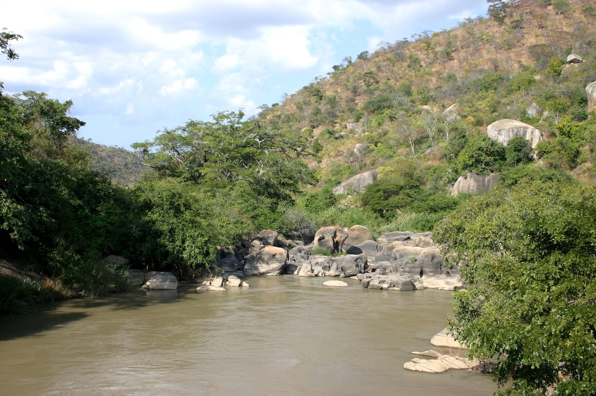
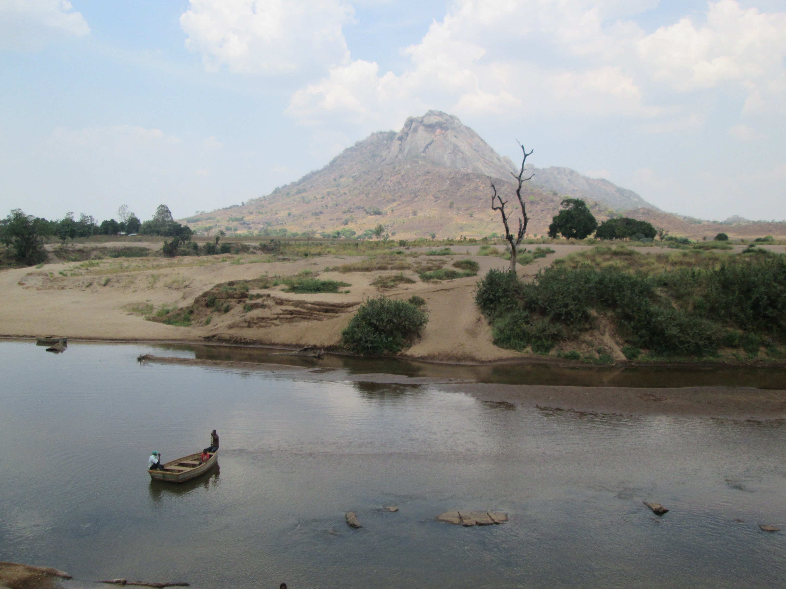
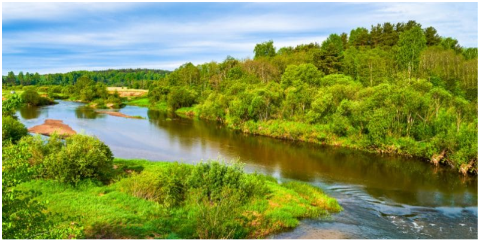
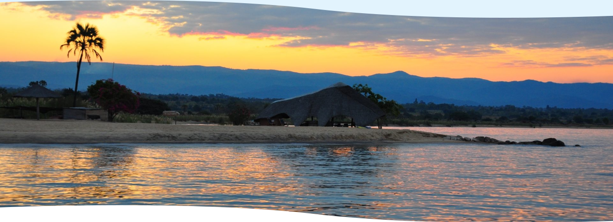
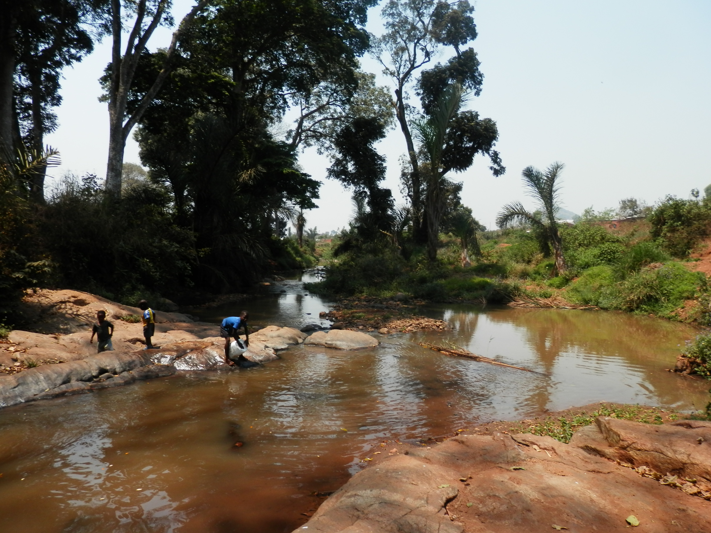
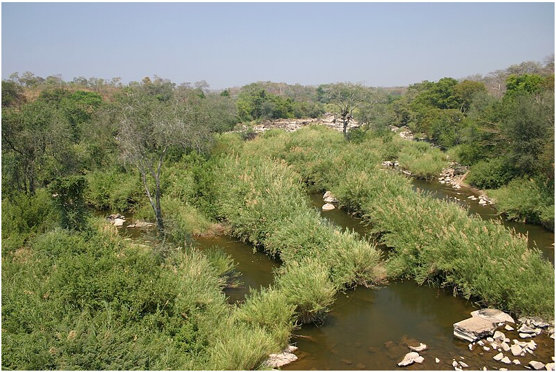

Malawi, a landlocked country in southeastern Africa, is defined by its topography of highlands split by the Great Rift
Valley and enormous Lake Malawi. And this page will showcase some of the rivers located in Malawi.
list of rivers
Shire river
Lilongwe
South Rukuru River
Ruo river
Songwe River
Dwangwa River
Lufira River
Ngalamu River
Likangala river
Bua River
Linthipe
North Rukuru River
brief decriptions
Shire river
The Shire is the largest river in Malawi. It is the only outlet of Lake Malawi and flows into the Zambezi River in Mozambique. Its length is 402 kilometres. The upper Shire River issues from Lake Malawi and runs approximately 19 km before it enters shallow Lake Malombe.
Lilongwe
Lilongwe River is a river in Malawi; it flows through Lilongwe, the capital of the country. The river is
approximately 200 km long. It flows into Lake Malawi. It originates from Dzalanyama Forest Reserve on the border
between districts of Lilongwe and Dedza.
South Rukuru River

The South Rukuru River is a river of northern Malawi. The South Rukuru rises in southern Mzimba District, and
flows roughly north-northeast to empty into Lake Malawi. Its watershed mostly lies in the Mzimba Plain. Its
tributaries drain the western slopes of the Viphya Mountains.
Ruo river

Ruo River is the largest tributary of the Shire River in southern Malawi and Mozambique. It originates from the
Mulanje Massif and forms 80 km of the Malawi-Mozambique border. It joins the Shire River at Chiromo. The Ruo
River watershed includes the southern slopes of the Mulanje Massif and Shire Highlands in Malawi.
Songwe River

The Songwe River is a river that forms the international boundary between Malawi and Songwe Region, Tanzania.
The songwe region in Tanzania is named after the river. The Songwe's headwaters are where the borders of Malawi,
Tanzania, and Zambia meet. It flows southeast to empty into Lake Nyasa
Dwangwa River

The Dwangwa River is a river in Malawi, which flows into Lake Malawi. Its source is in the Kasungu National
Park, in Malawi's central plateau. It flows north-easterly from this plateau through an ancient valley. The
river's mouth flows out of a more recently cut gorge, into the lake.
Lufira River
Lufira River
This list is arranged by drainage basin, with respective tributaries indented under each larger stream's name.
Indian Ocean edit. Ruvuma River (Mozambique)
Ngalamu River
The Ngalamu River is a river of northern Mozambique and Malawi, located to the west of Lake Amaramba. It is
located at 14°24′0″S 35°41′0″E.
Likangala river

The Likangala River originates at Zomba mountain in southern Malawi and flows through both urban and rural areas
before it flows into Lake Chilwa, a wetland of international significance being a UNESCO Biodiversity Reserve
and Ramsar site.
Bua River

Bua River originates from Mchinji highlands and runs through Nkhotakota, Kasungu, Ntchisi, Dowa, Mchinji and
Lilongwe districts. Linthipe River originates from Dzalanyama Ranges (Dedza) and runs through Dedza, Lilongwe
and Salima districts
Linthipe
The Linthipe River is a major spawning river and it is unprotected being polluted with untreated sewage.lt is
located in Dedza district.
North Rukuru River
North Rukuru River is a stream and is located in Malawi. The estimate terrain elevation above seal level is 476
metres. The river is located in Karonga.